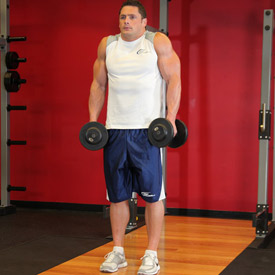

<!DOCTYPE html PUBLIC "-//W3C//DTD XHTML 1.0 Strict//EN" "http://www.w3.org/TR/xhtml1/DTD/xhtml1-strict.dtd">
<!--
Design by Free CSS Templates
http://www.freecsstemplates.org
Released for free under a Creative Commons Attribution 2.5 License

Name       : Open-Air
Description: A two-column, fixed-width design with dark color scheme.
Version    : 1.0
Released   : 20120818

-->
<html xmlns="http://www.w3.org/1999/xhtml"/>
<?php
session_start();
include('mygymdbConnect.php');
include('SignUp.php');
?>
<html>
    <head>
        <title> MyGym</title>
        <div style="position :absolute;top:20px;left:40px">
            <p><h2>MY<br/> 
                    GYM 
                    <br/></h2></p></div>
        <div style="position: absolute ;left:  200px; top: 20px;"> </div>
        <div style="position:absolute;top:37%;left:35%"/>
        <link href="http://fonts.googleapis.com/css?family=Oswald:400,300" rel="stylesheet" type="text/css" />         

        <link href="style.css" rel="stylesheet" type="text/css" media="screen" />
        <a href="home.php" style="text-decoration: none;color: black;font:serif;font-weight: bold;  ">Home |</a>
        <a href="About.html" style="text-decoration: none;color: black;font:serif;font-weight: bold;  ">About |</a>
        <a href="sign up.html" style="text-decoration: none;color: black;font:serif;font-weight: bold;  ">Sign up |</a>
        <a href="Activities.html" style="text-decoration: none;color: black;font:serif;font-weight: bold;  ">Activities |</a>
        <a href="Trainers.html" style="text-decoration: none;color: black;font:serif;font-weight: bold;  ">Trainers |</a>
        <a href="classes.html" style="text-decoration: none;color: black;font:serif;font-weight: bold;  ">Classes |</a>
        <a href="Training.html" style="text-decoration: none;color: black;font:serif;font-weight: bold;  ">Train |</a>   

    </head>

    <body>
        <div style="position: absolute;left: -300px">
            <table  cellpadding="10" cellspacing="10" height="400px" width="1200px">
                <tr><td></img></td>
                    <td><b>Description</b><br></br>The trapezius muscle is a flat, triangular muscle that covers the back of the neck, shoulders and thorax. The upper and lower fibers are important to the orientation of the shoulder blade (scapula). The upper part, acting alone, elevates the shoulder and braces the shoulder girdle when a weight is carried. The lower part draws the scapula downward. When both of the trapezius muscles act together, the scapula can be brought toward the body and the head can draw directly backward.


                    </td></tr>
            </table></div>
        <div style="position: absolute;left: -200px;top: 500px" >
            <table border="2"  cellpadding="10" cellspacing="10" align="center">
                <tr><td><b>EXERCISES</b></td></tr>
                <tr><td></img></br>
                        </img></td>
                    <td><b>Barbell Shrug</b>
                        </br>
                        1-Stand up straight with your feet at shoulder width as you hold a barbell with both hands in front of you using a pronated grip (palms facing the thighs). Tip: Your hands should be a little wider than shoulder width apart. You can use wrist wraps for this exercise for a better grip. This will be your starting position.
                        </br>2-Raise your shoulders up as far as you can go as you breathe out and hold the contraction for a second. Tip: Refrain from trying to lift the barbell by using your biceps.
                        </br>3-Slowly return to the starting position as you breathe in.
                        </br>4-Repeat for the recommended amount of repetitions.
                        </br>5-Variations: You can also rotate your shoulders as you go up, going in a semicircular motion from front to rear. However this version is not good for people with shoulder problems. In addition, this exercise can be performed with the barbell behind the back, with dumbbells by the side, a smith machine or with a shrug machine.


                    </td>
                </tr>
                <tr><td></img></br>
                        </img></td>
                    <td><b>Cable Shrugs</b></br>
                        1-Grasp a cable bar attachment that is attached to a low pulley with a shoulder width or slightly wider overhand (palms facing down) grip.
                        </br>2-Stand erect close to the pulley with your arms extended in front of you holding the bar. This will be your starting position.
                        </br>3-Lift the bar by elevating the shoulders as high as possible as you exhale. Hold the contraction at the top for a second. Tip: The arms should remain extended at all times. Refrain from using the biceps to help lift the bar. Only the shoulders should be moving up and down.
                        </br>4-Lower the bar back to the original position.
                        </br>5-Repeat for the recommended amount of repetitions.
                        </br>6-Variations: You can perform this exercise with bands, barbells or dumbbell. You can also use a single handle and work one side at a time.
                    </td>
                </tr>
                <tr><td></img></br>
                        </img></td>
                    <td><b>Dumbbell Shrug</b></br>Stand erect with a dumbbell on each hand (palms facing your torso), arms extended on the sides.
                        </br>1-Lift the dumbbells by elevating the shoulders as high as possible while you exhale. Hold the contraction at the top for a second. Tip: The arms should remain extended at all times. Refrain from using the biceps to help lift the dumbbells. Only the shoulders should be moving up and down.
                        </br>2-Lower the dumbbells back to the original position.
                        </br>3-Repeat for the recommended amount of repetitions.
                        </br>4-Variations: You can perform this exercise with bands, barbells or cables. You can also use a single handle and work one side at a time.
                    </td>
                </tr>
                <tr><td></img><br></br>
                        </img>  </td>
                    <td><b>Scapular Pull-Up</b>
                        </br>1-Take a pronated grip on a pull-up bar.
                        </br>2-From a hanging position, raise yourself a few inches without using your arms. Do this by depressing your shoulder girdle in a reverse shrugging motion.
                        </br>3-Pause at the completion of the movement, and then slowly return to the starting position before performing more repetitions.
                    </td>
                </tr>
            </table>
        </div>
    </body>
</html>